Flutter App由widgets組成，Flutter widget使用宣告模式，widget定義類似下列MaterialApp widget，每個Widget有自己的屬性，使用者只需在widget屬性宣告對應類型，即可使用該widget。Android App使用Material設計，Flutter Android App通常以MaterialApp widget為起始，MaterialApp widget定義如下：
MaterialApp( {Key? key, GlobalKey<NavigatorState>? navigatorKey, GlobalKey<ScaffoldMessengerState>? scaffoldMessengerKey, Widget? home, Map<String, WidgetBuilder> routes = const <String, WidgetBuilder>{}, String? initialRoute, RouteFactory? onGenerateRoute, InitialRouteListFactory? onGenerateInitialRoutes, RouteFactory? onUnknownRoute, List<NavigatorObserver> navigatorObservers = const <<NavigatorObserver>[], TransitionBuilder? builder, String title = '', GenerateAppTitle? onGenerateTitle, Color? color, ThemeData? theme, ThemeData? darkTheme, ThemeData? highContrastTheme, ThemeData? highContrastDarkTheme, ThemeMode? themeMode = ThemeMode.system, Locale? locale, Iterable<LocalizationsDelegate>? localizationsDelegates, LocaleListResolutionCallback? localeListResolutionCallback, LocaleResolutionCallback? localeResolutionCallback, Iterable<Locale> supportedLocales = const <Locale>[Locale('en', 'US')], bool debugShowMaterialGrid = false, bool showPerformanceOverlay = false, bool checkerboardRasterCacheImages = false, bool checkerboardOffscreenLayers = false, bool showSemanticsDebugger = false, bool debugShowCheckedModeBanner = true, Map<ShortcutActivator, Intent>? shortcuts, Map<Type, Action<Intent>>? actions, String? restorationScopeId, ScrollBehavior? scrollBehavior, bool useInheritedMediaQuery = false} )
- key：用於維持widget在widgets樹狀態，一般用於widgets樹中相同類型widgets新增、移除、重組時使用。
- home：用於設定App起始Widget，下列程式片段設定MyHomePage為起始Widget。
- routes：用於App路由(routing)導覽使用named routes(命名路由)時，routes用於設定頁面路由名稱及對應頁面，會在後續導覽單元中介紹。
- initialRoute：App路由(routing)導覽使用named routes(命名路由)時，initialRoute屬性用於設定App起始頁面路由名稱，請注意：initialRoute屬性不能與home屬性並存。
- title：用於設定工作管理員顯示文字，iOS無作用。
- color：用於設定Android應用程式切換(switcher)預設顏色，可以使用預設色板物件Colors來設定顏色，色板包含Material設計預設顏色，每個預設顏色可搭配顏色強度(例如Colors.blue[500])，顏色強度包含50、100-900每次增加100，Accent顏色強度僅包含100、200、400、700。除了Colors物件，也可以使用Color(0xAARRGGBB)、Color.fromARGB(0-255,0-255,0-255,0-255)、Color.fromRGBO(0-255,0-255,0-255,0-1)來設定顏色，其中0xAARRGGBB中AA代表16進位透明度值(00-FF)、RGB分別代表16進位紅、綠、藍值(00-FF)，Color.fromRGBO中O代表透明度(Opacity)。
- theme：用於設定App階層場景，可設定整個App層級場景，例如ThemeData.light()(淺色模式)、ThemeData.dark()(深色模式)，程式片段primarySwatch用於設定版面主題色調。
- darkTheme：用於設定App暗色場景。
- debugShowCheckedModeBanner：用於設定顯示 Debug 橫幅，預設為true。
練習：請改變專案範本主要色調為紅色，之後嘗試設定淺色與深色場景。
練習：請開啟模擬器深色主題並將專案範本darkTheme設定為ThemeData.dark()(深色模式)。
練習：請取消專案範本顯示Debug橫幅。
Scaffold Widget為Material設計最常用版面規劃widget，Scaffold Widget除了頁面內容body屬性，包含AppBar、FloatingActionButton、Drawer、BottomNavigationBar等widgets，在說明Scaffold widget之前，將先對前項widgets進行說明。
Scaffold({ Key? key, PreferredSizeWidget? appBar, Widget? body, Widget? floatingActionButton, FloatingActionButtonLocation? floatingActionButtonLocation, FloatingActionButtonAnimator? floatingActionButtonAnimator, List<Widget>? persistentFooterButtons, Widget? drawer, DrawerCallback? onDrawerChanged, Widget? endDrawer, DrawerCallback? onEndDrawerChanged, Widget? bottomNavigationBar, Widget? bottomSheet, Color? backgroundColor, bool? resizeToAvoidBottomInset, bool primary = true, DragStartBehavior drawerDragStartBehavior = DragStartBehavior.start, bool extendBody = false, bool extendBodyBehindAppBar = false, Color? drawerScrimColor, double? drawerEdgeDragWidth, bool drawerEnableOpenDragGesture = true, bool endDrawerEnableOpenDragGesture = true, String? restorationId} )
- body：用於設定Scaffold widget頁面顯示內容。
AppBar置於APP的最上方，一般用於設定標題列(title)、動作按鈕(actions)與跳頁選單(Tabs)，AppBar widget基本包含三個區塊如下位置示意圖。
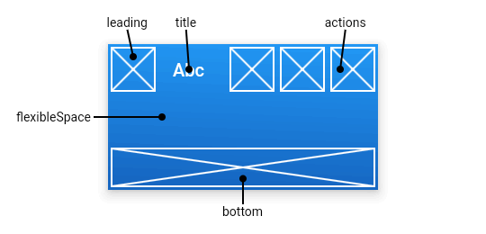
AppBar({Key key, Widget leading, bool automaticallyImplyLeading: true, Widget title, List actions, Widget flexibleSpace, PreferredSizeWidget bottom, double elevation: 4.0, Color backgroundColor, Brightness brightness, IconThemeData iconTheme, TextTheme textTheme, bool primary: true, bool centerTitle, double titleSpacing: NavigationToolbar.kMiddleSpacing, double toolbarOpacity: 1.0, double bottomOpacity: 1.0 })
- leading：用於設定標題列之前的widget，當屬性automaticallyImplyLeading為false而leading為null時，標題列會占用leading位置，當屬性automaticallyImplyLeading為true而leading為null時，系統會自動設定對應leading widget，如跳頁時會於下一頁leading位置自動加入回上頁圖示按鈕或在Scaffold設定drawer時自動加入menu圖示按鈕。下列程式片段設定leading屬性為空值(null)與非空值(Icon widget)。Material圖示請參照Material Icons。 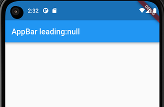
- title：用於設定標題列，一般為Text widget。
- actions：用於設定Widget清單，一般用於擺放動作按鈕如IconButton widget(圖示按鈕)。 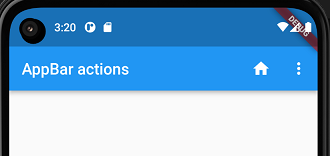
- bottom：一般用於設定TabBar widget，下列程式範例說明在AppBar widget中bottom屬性設定兩個選項的TabBar widget。 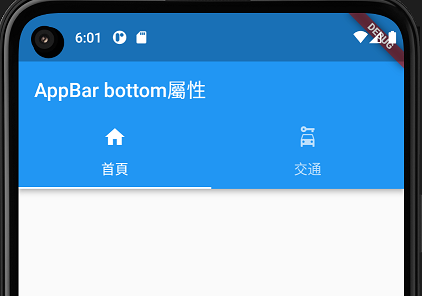
- centerTitle：用於設定標題列是否置中。
class _MyHomePageState extends State<MyHomePage> { @override @override Widget build(BuildContext context) { return Scaffold( appBar: AppBar( leading: null, title: const Text('AppBar leading:null'), ), body: const Center( child: Text('AppBar leading:null'), ), ); } }
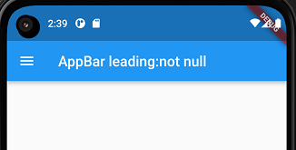class _MyHomePageState extends State<MyHomePage> { @override @override Widget build(BuildContext context) { return Scaffold( appBar: AppBar( leading: const Icon(Icons.menu), title: const Text('AppBar leading:not null'), ), body: const Center( child: Text('AppBar leading:null'), ), ); } }
class _MyHomePageState extends State<MyHomePage> { @override @override Widget build(BuildContext context) { return Scaffold( appBar: AppBar( leading:null, title: const Text('AppBar actions'), actions: [ IconButton(onPressed: () {}, icon: const Icon(Icons.home)), IconButton(onPressed: () {}, icon: const Icon(Icons.more_vert)) ], ), body: const Center( child: Text('AppBar leading:null'), ), ); } }
練習：請設定圖示按鈕並使用圖示person。
class _MyHomePageState extends State<MyHomePage> { @override Widget build(BuildContext context) { return DefaultTabController( initialIndex: 0, length: 2, child: Scaffold( appBar: AppBar( title: const Text('AppBar bottom屬性'), bottom: const TabBar(tabs: [ Tab(icon: Icon(Icons.home), text: '首頁'), Tab( icon: Icon(Icons.car_rental), text: '交通', ) ])), body: const Center( child: Text('AppBar widget bottom屬性'), ), )); } }
FloatingActionButton widget常用於Scaffold widget，除了預設FloatingActionButton widget，也包含其他三種FloatingActionButton.extended、FloatingActionButton.large、FloatingActionButton.small widgets，widget定義僅列出FloatingActionButton，其他widgets定義請參考官網，使用者如果要個別修改按鈕顏色可使用Color或Colors物件。
FloatingActionButton( {Key? key, Widget? child, String? tooltip, Color? foregroundColor, Color? backgroundColor, Color? focusColor, Color? hoverColor, Color? splashColor, Object? heroTag = const _DefaultHeroTag(), double? elevation, double? focusElevation, double? hoverElevation, double? highlightElevation, double? disabledElevation, required VoidCallback? onPressed, MouseCursor? mouseCursor, bool mini = false, ShapeBorder? shape, Clip clipBehavior = Clip.none, FocusNode? focusNode, bool autofocus = false, MaterialTapTargetSize? materialTapTargetSize, bool isExtended = false, bool? enableFeedback} )
- onPressed：為必要(required)屬性，用於設定使用者點選後執行函數，執行函數為null、(){}，執行函數設定為null則按鈕無作用。
- child：設定按鈕要包含widget，一般為Icon widget(圖示)。
- tooltip：設定按鈕按下時說明文字。 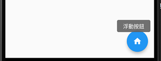
class _MyHomePageState extends State<MyHomePage> { @override Widget build(BuildContext context) { return Scaffold( appBar: AppBar( leading: null, title: const Text('FloatingActionButton'), ), body: const Center( child: Text('FloatingActionButton onPressed:null'), ), floatingActionButton: FloatingActionButton( onPressed: () {}, tooltip: '浮動按鈕', child: const Icon(Icons.home), ), ); } }
練習：請利用上述程式並設定FloatingActionButton widget按鈕背景顏色改為紅色。
練習：請利用FloatingActionButton.extended widget並使用Icon(Icons.thumb_up)製作下列輸出結果。
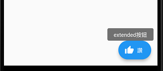Drawer用於設定側邊選單，側邊選單內容顯示一般使用ListView widget，DrawerHeader widget可用於設定Drawer檔頭內容，Flutter預設會在AppBar顯示選單開啟/關閉按鈕。
Drawer( {Key? key, Color? backgroundColor, double? elevation, ShapeBorder? shape, double? width, Widget? child, String? semanticLabel} ) DrawerHeader( {Key? key, Decoration? decoration, EdgeInsetsGeometry? margin = const EdgeInsets.only(bottom: 8.0), EdgeInsetsGeometry padding = const EdgeInsets.fromLTRB(16.0, 16.0, 16.0, 8.0), Duration duration = const Duration(milliseconds: 250), Curve curve = Curves.fastOutSlowIn, required Widget? child} )
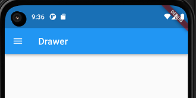 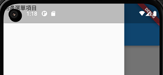class _MyHomePageState extends State<MyHomePage> { @override Widget build(BuildContext context) { return Scaffold( appBar: AppBar( leading: null, title: const Text('Drawer'), ), body: const Center( child: Text('Drawer'), ), drawer: const Drawer( child: Text('側邊選單項目') ), ); } }
- backgroundColor：用於設定側邊選單背景顏色。
- child：用於設定側邊內容，最常使用ListView widget搭配DrawerHeader widget。 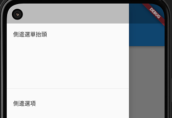
練習：請練習更新側邊選單背景顏色。
class _MyHomePageState extends State<MyHomePage> { @override Widget build(BuildContext context) { return Scaffold( appBar: AppBar( leading: null, title: const Text('Drawer'), ), body: const Center( child: Text('Drawer'), ), drawer: Drawer( child: ListView(children: const [ DrawerHeader(child: Text('側邊選單抬頭')), ListTile( title: Text('側邊選項'), ) ])), ); } }
BottomNavigationBar widget常用於Scaffold widget設定底部導覽列，底部導覽列最少要包含2個項目，項目內容會使用ButtonNavigationBarItem widget，ButtonNavigationBarItem widget中icon、label屬性不可為空值。
BottomNavigationBar(
{Key? key,
required List
- items：為必要(required)屬性，用於設定底部導覽列項目。
- onTap：為一代入整數值函數，用於代入使用者點選項目索引值，並執行設計的動作。
- currentIndex：用於設定正在作用的項目索引值，當使用者點選新項目時，可在onTap屬性透過狀態更新setState((){});更新正在作用項目狀態。 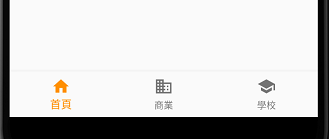
class _MyHomePageState extends State<MyHomePage> { @override Widget build(BuildContext context) { return Scaffold( appBar: AppBar( leading: null, title: const Text('FloatingActionButton'), ), body: const Center( child: Text('FloatingActionButton onPressed:null'), ), bottomNavigationBar: BottomNavigationBar( items: const <BottomNavigationBarItem>[ BottomNavigationBarItem( icon: Icon(Icons.home), label: '首頁', ), BottomNavigationBarItem( icon: Icon(Icons.business), label: '商業', ), BottomNavigationBarItem( icon: Icon(Icons.school), label: '學校', ), ], currentIndex: 0, selectedItemColor: Colors.amber[800], onTap: (int i) {}, ), ); } }
Text widget用於顯示文字。Text widgets包含Text與Text.rich widgets，Text widget所有的文字套用相同文字樣式，而Text.rich widget可對部分文字設定不同樣式。請注意設定文字可包含特殊符號如\n(強迫跳行)、\t(跳格)等。
Text(String data, { Key key, TextStyle style, TextAlign textAlign, TextDirection textDirection, Locale locale, bool softWrap, TextOverflow overflow, double textScaleFactor, int maxLines, String semanticsLabel })
- String data：欲顯示的文字，置於單括號或雙括內。
- textAlign：使用TextAlign列舉類別包含center(置中)、end(文字方向左到右則靠右，文字方向又到左則靠左)、justify(分散對其)、left(靠左)、right(靠右)、start(文字方向左到右則靠左，文字方向又到左則靠右)。
- textDirection：利用TextDirection列舉類別，包含ltr(文字左到右)與rtl(文字右到左)。
- locale：在地化設定，用於設定語言及國家。
- softWrap：布林值用於設定是否自動跳行。
- style：利用TextStyle類別來設定文字樣式包含color(顏色)、fontSize(字體大小)、fontWeight(字體粗細)、fontStyle(字體樣式如斜體)、letterSpaceing(字母間距)、wordSpacing(字間距)、textBaseline(文字對齊基準線)、height(行高)、locale(設定本地化語言)、foreground(前景樣式)、background(背景樣式)、decoration(設定底線或刪除線等裝飾)、decorationColor(設定裝飾線顏色)、decorationStyle(設定裝飾線樣式)、debugLabel(除錯狀態樣式說明文字)、fontFamily(字型)與package(套件名稱)。
-
color：用於設定顏色，使用Colors或Color類別。Colors藉由選擇顏色並套用顏色樣本值來設定顏色強度，顏色強度值在0到900之間，例如Colors.green代表預設強度為500的綠色(Colors.green[500])。Color類別則是代入透明度及紅綠藍的16進位值如Color(0xAARRGGBB)，其中AA,RR,GG,BB為16進位數字從00到ff，分別代表透明度與紅綠藍的值(例如Color(0xffff0000)為紅色完全不透明)。使用者也可使用Color.fromARGB(AA,RR,GG,BB)代入透明度與紅綠藍的值，代入值可以是16進位或10進位值。Color.fromRGBO(RR,GG,BB,O)，其中O為透明度，值從0.0到1.0，分別代表完全透明到完全不透明。
練習：請使用Colors與Color類別練習不同顏色與透明度設定。
- fontWeight：FontWeight類別用於設定字體粗細，可用normal、bold或w100到w900等常數來設定字體粗細。
- fontStyle：FontStyle類別，使用normal或italic常數設定正常字體或斜體。
- textBaseline：TextBaseline類別，用於設定底線對齊，包含alphabetic(文字)與ideographic(表意圖示)兩個常數值。
- decoration：TextDecoration類別，用於設定lineThrough(刪除線)、overline(上標線)與underline(底線)。
- decorationStyle：TextDecorationStyle類別，用於設定decoration樣式包含常數dashed(虛線)、dotted(點線)、double(雙線)、solid(實線)與wavy(波浪線)。
TextStyle({bool inherit: true, Color color, double fontSize, FontWeight fontWeight, FontStyle fontStyle, double letterSpacing, double wordSpacing, TextBaseline textBaseline, double height, Locale locale, Paint foreground, Paint background, TextDecoration decoration, Color decorationColor, TextDecorationStyle decorationStyle, String debugLabel, String fontFamily, String package })
當設計者希望將不同的樣式套用於一段文字，則需使用Text.rich widget，Text.rich widget使用TextSpan widget來包含多段不同樣式的文字，TextSpan widget又可包含多個TextSpan widgets，而每個TextSpan均可設定樣式。
Text.rich(TextSpan textSpan, { Key key, TextStyle style, TextAlign textAlign, TextDirection textDirection, Locale locale, bool softWrap, TextOverflow overflow, double textScaleFactor, int maxLines, String semanticsLabel }) TextSpan({TextStyle style, String text, List children, GestureRecognizer recognizer })